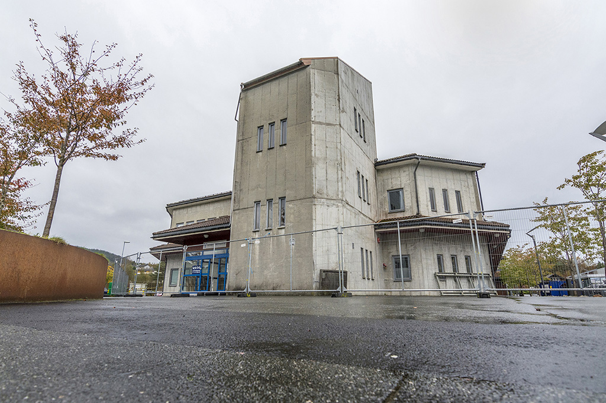
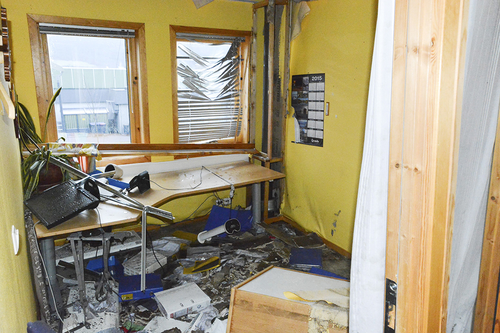
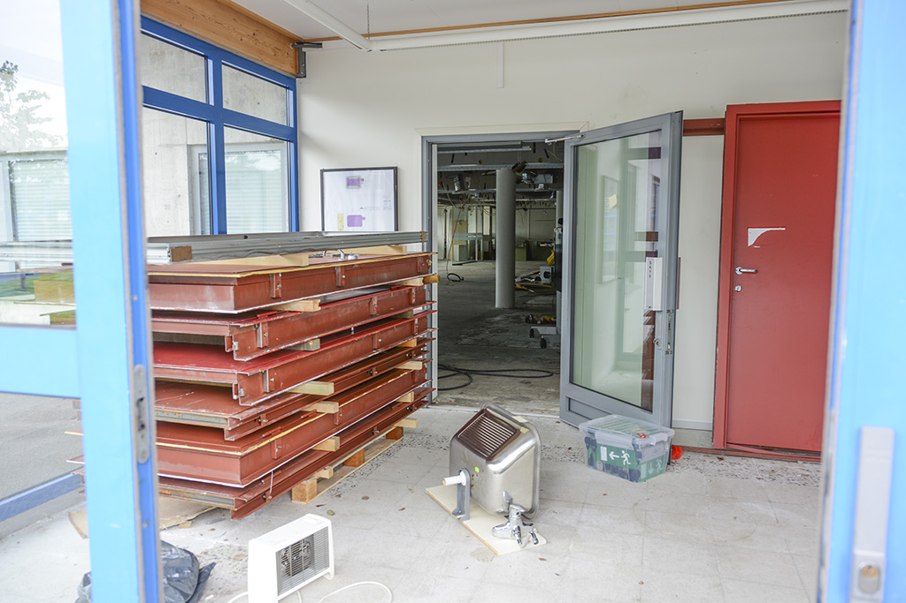
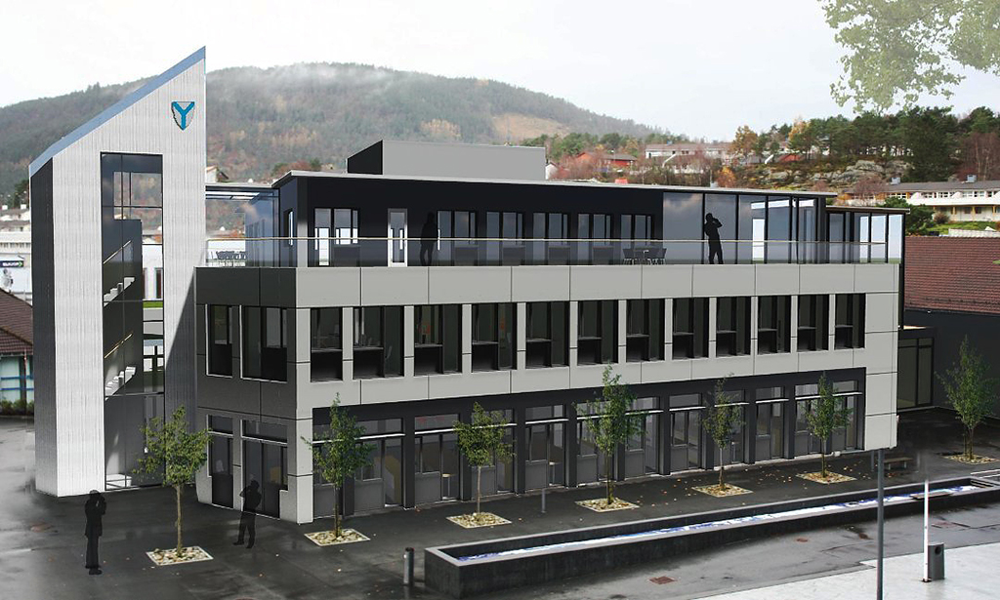
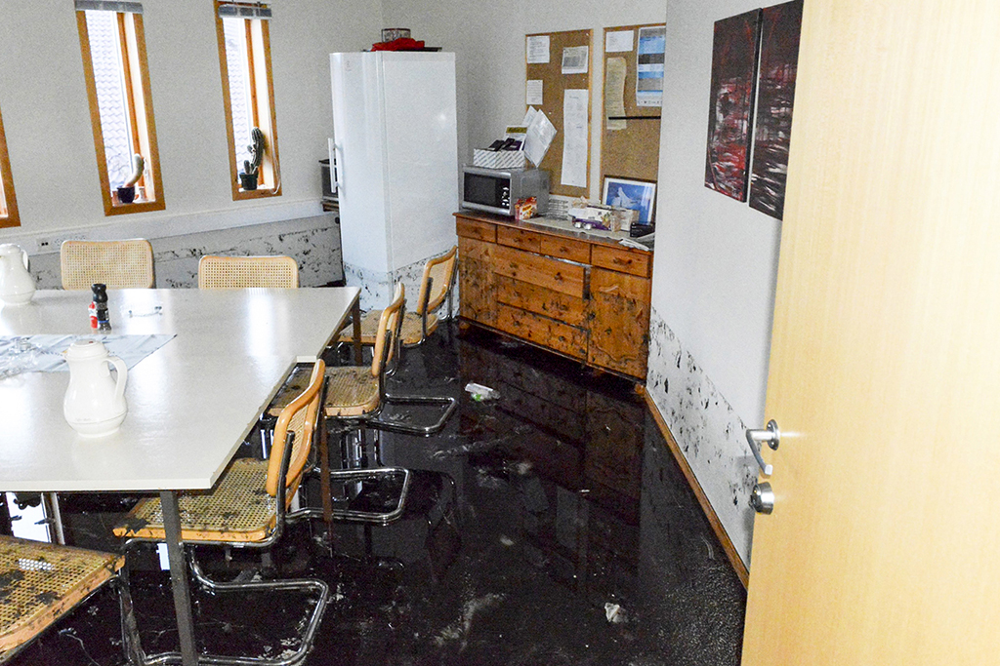
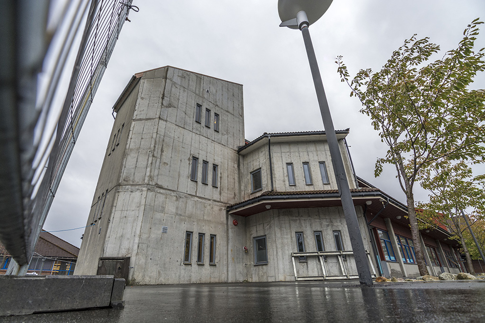

– Ein går no inn for Aksen utan å vita heilt kva ein går inn for. Dette blir tungt å forsvara i ettertid. Ei utgreiing ville gitt oss svar på om det eine eller det andre er best. Det skulle ikkje vore vanskelegare enn det. Otto Benjaminson, 24. november 2016.
KrF-politikar Otto Benjaminson står på talarstolen i kommunestyret. Det er den 24. november 2016. Han er éin av ei rekkje kommunestyremedlemar som går på talarstolen denne kvelden, med ei instendig bøn om å få éi månads utsetjing av vedtaket om kva ein skal gjera med kontorfellesskap på Husnes. Til liks med fleire i opposisjonen vil Benjaminson ha utgreidd eit alternativ til Aksen; han vil vita kva eit nybygg på ei anna tomt vil kosta og innebera, slik at ein kan samanlikna to alternativ før ein vedtar noko. Men nok ein gong må opposisjonen gå skuffa heim. Denne kvelden vedtar kommunestyret å kjøpa heile Aksen – 1,5 år etter vasslekkasjen som sette den ut av spel.
Kva er det som fører til vedtaket om kjøp av Aksen? I tida rett etter vasslekkasjen uttalar fleire kommunalt tilsette at Aksen er eit «problembygg», som ein no ønskjer å nytta høvet til å byta ut. Så korleis kan det gå frå dette, til å bli ei forhandling om vidare leigekontrakt av Aksen, og så enda opp med å bli eit kjøp og ei oppgradering på til saman 115 millionar kroner, utan at andre alternativ er utgreidde? Er Aksen-kjøpet eit godt val for regionssenteret Husnes, eller har Kvinnherad kommune, allereie tynga av høg lånegjeld, kjøpt «katta i sekken»? Handla det heile om frykta for eit nytt rådhus på Husnes, slik fleire tok til orde for den gongen prosessen stod på? Eller er det motstandarane av vedtaket som har vore konspiratoriske og vanskelege?
Nokre spørsmål kring Aksen-prosessen vil ein kanskje aldri få svar på. Men Kvinnheringen har likevel prøvd å sjå nærare på kva som eigentleg skjedde etter vasslekkasjen i Aksen for 2,5 år sidan og fram til i dag, for kanskje å koma nærare eit svar på nokre av dei mange spørsmåla ein står att med. Og kanskje kan ein læra noko av denne prosessen.

Slik var prosessen
Nærast over natta gjekk Aksen frå å vera eit bygg som kommunen såg på som eit problem, til å bli «den ideelle løysinga» førebels kalkulert til 115 millionar kroner. Og det utan at alternative utgreiingar nokon gong blei gjort. Kva skjedde, eigentleg?
Tysdag morgon, 17. mars 2015: Tilsette i Nav, Vaksenopplæringa, Rus og psykiatri, Flyktningtenesta og kyrkjekontoret vaknar opp til ein arbeidsdag utanom det vanlege. I løpet av natta har eit røyr i Aksen sprunge lekk i samband med at Kvinnherad kommune skal skifta ein røyrdel i ein kumme før dei skal spyla ein vassleidning. Vatnet vart difor stengd av på Husnes eit par timar. Då det vart sett trykk på igjen, skjedde uhellet, og no på morgonen er store delar av bygget er totalt oversvømt. Eit raskt blikk på kaoset er nok til å slå fast at utstyr for store summar er øydelagd. Gamle kyrkjebøker er av det som er gjennomvått. Kriseløysingar blir sett i verk for å husa dei akutt kontorlause. Også private leigetakarar går med i dragsuget. Kaffebaren «Kaffelade», til dømes, får inventaret sitt øydelagt, og står utan lokale.

HERPA: Vasslekkasjen øydela såpass mange rom at dei tilsette som hadde arbeidsplassane sine der måtte finna andre plassar å vera i dagane som følgde. Fordi prosessen med Aksen har teke så lang tid, har ulike kommunale etatar måtta leva lenge med det som eigentleg berre skulle vera «midlertidig».
I dagane som kjem blir dei ulike Aksen-leigetakarane fordelte på ulike tilgjengelege lokale rundt på Husnes. Halve Nav flyttar inn i dei tidlegare DNB-lokala i den uskadde delen av Aksen, resten blir flytta til Lonabrotet. Vaksenopplæringa held fram i 3. etasje på Aksen ei lita stund til, men utan internett og dårleg kapasitet på varmtvatn. Snart blir dei òg flytta, og må nytta klasserom i Kulturskulesenteret, på Kulturhuset Husnes og på biblioteket, og etter kvart òg i kjellaren på Husnes Storsenter.
– Det er ei utfordring å laga timeplanar utan å dobbeltbooka rom. All ære til institusjonane som er så velvillige til å dela lokala sine med oss i denne akutte situasjonen, uttalar rektor for Vaksenopplæringa, Ingvill Gåsemyr Sæberg, til Kvinnheringen 15. april same året.
I same avis seier dåverande rådmann Trond Sætereng at ein må rekna med at ein ikkje kjem inn i Aksen igjen før årsskiftet det året. Samstundes viser han til ein pågåande dialog om å finna noko anna enn Aksen for framtida: – Lokala er ikkje ideelle for behova våre, og det er dyrt å leiga lokale der. Vi har hatt ein prosess gåande om dette eit par års tid, og vi nyttar kanskje høvet no til å få andre løysingar, uttalar Sætereng 15. april 2015. Han gjer samstundes kjent at kommunen vil halda fram med å betala husleige for Aksen mot at huseigar Husnes storsenter skaffar og held dei med mellombelse lokale.
– Lokala er ikkje ideelle for behova våre, og det er dyrt å leiga lokale der. Dåverande rådmann Trond Sætereng, 15. april 2016.
Gamlesenteret
Tidleg i august 2015 blir det kjent at Mosvold og co. vel å selja seg ut av Husnes storsenter etter å ha tapt store summar i åra dei har eigd senteret, og Storebrand Eigedomsfond blir no eineeigar. Senteret blir heretter forvalta av Union på vegner av Storebrand.
21. august 2015 seier Josef Schlezinger, Union sin representant på Husnes, at alt av møblar og anna er fjerna, og at Aksen står og tørkar. Han legg til at det i løpet av ikkje så lang tid vil bli installert brannalarmanlegg, at sprinkelanlegg vil bli reparerte og oppgraderte, og at det skal jobbast med rehabilitering.
– (...) Bygget skal rehabiliterast, det er det vi er dekt av forsikringa til å gjera, uttalar Schlezinger til Kvinnheringen denne dagen.
Forsikringsoppgjeret er då enno ikkje klart, men han estimerer at det kan koma på pluss/minus 15 millionar kroner.
Rådmann Sætereng går i same avis endå lenger i å seia at Aksen er uaktuelt som vidare leigeobjekt.
– Per i dag er vi i dialog med huseigar om nye lokale, for vi vil ikkje tilbake i desse lokala. Tredje etasje i Aksen er tom, men ikkje eigna til undervisningslokale for Vaksenopplæringa, seier han.
Den 7. oktober 2015, eit halvt år etter lekkasjen, uttalar dåverande fungerande rådmann, Kjell Odd Nygård, til Kvinnheringen at det er heilt uaktuelt å gå tilbake til Aksen.
– Vi har sagt at viss dei (huseigar, red. mrk) ikkje gir oss eit «tilbod vi ikkje kan seia nei til», så må vi ordna det sjølv, og byggja noko eige. Dei har kome tilbake til oss med eit forslag som vi synest verkar bra, men vi er ikkje komne dit hen at vi skriv kontrakt. Vi ønskjer å samla alt vi har på Husnes i éin bygningsmasse. Vi har allereie bibliotek, kulturhus og kulturskulesenter på éin plass, og kunne vi fått noko som hadde vore knytt opp til det så hadde det vore kjekt. Då er det jo berre éin bygning som peikar seg ut. Tilbodet vi jobbar med er (gamle)senteret, men berre delar av det. Vi ønskjer lokale ned mot Opsangervatnet slik at vi får lys inn. Det er forferdeleg viktig for oss at vi får gode og trivelege kontorlokale, uttalar Nygård.

RIVING: Sandvoll Entreprenør fekk anbodet og er no i full gang med «stripping» av Aksen, det vil seia å riva og rydda ut alt intventar til berre betong-«råbygget», vindauge og dørar står att. Underleverandørar er blant anna Husnes Røyr og Into Elektro.
I tida som kjem jobbar Torghuset AS hardt med å gjera gamlesenteret attraktivt nok for kommunen, og Josef Schlezinger uttalar i slutten av oktober 2015 at han trur ein avtale snart skal vera på plass. Også Kjell Odd Nygård er optimist, og gjentar at det hastar å finna lokale til dei som missa plassane sine etter vasslekkasjen.
Ombygging av Aksen
Så blir det desember 2015, og fristen for når Aksen skulle ha vore fiksa etter dei opphavlege planane nærmar seg styggeleg. Men kontorsituasjonen er like i det blå som dagen etter vasslekkasjen. Og no tar saka nok ei ny vending: Huseigar forkastar heile gamlesenteret som alternativ. I staden lanserer dei teikningar for ei total ombygging av Aksen. Berre murskjelettet skal stå att, og bygget skal bli heilt nytt og moderne.
– Det blir nok like dyrt å byggja om Aksen som gamlesenteret, men dei totale løysingane blir betydeleg betre med dette forslaget. Derfor meiner huseigar det er det absolutt beste alternativet som gir det beste arbeidsmiljøet. Kommunen vil med denne løysinga få eit topp moderne servicebygg som tar vare på dei funksjonane dei hadde på Husnes før vasslekkasjen, til same kostnad som før, og i tillegg opsjon på areal til utviding ved behov i framtida, uttalar senterleiar Geir Jakobsen på ein pressekonferanse i desember 2015.

SKISSE: I desember 2015 forkastar huseigar heile gamlesenteret som alternativ. I staden lanserer dei teikningar for ei total ombygging av Aksen.
Startar på nytt
I januar 2016 begynner Odd Ivar Øvregård som ny rådmann i Kvinnherad kommune. Han meiner ein må ta eit steg tilbake og starta prosessen om kontorlokale på Husnes på nytt. Kort tid etter lyser kommunen ut at interessentar med lokale eller tomter med plass for 60 kontorlokale på Husnes blir bedne om å ta kontakt. Kommunen får inn åtte tilbod. 10. mars 2016 får formannskapet presentert tilboda, og rådmann Øvregård ber om handlefridom til å inngå forhandlingar. Følgjande tilbod kjem inn: Aksen (Union Eigedom A/S), Husnes hotell (Geir Rusten) Lonabrotet (Morten Harsvik), tomt ovanfor Rema (Silje Skrede Hjelmeland), Husnes Industriområde (Tess Vest, avd. Kvinnherad), Hybelhuset (Jens Martin Fotland), Teigenbygget (Even Teigen) og næringstomt Podlen (Ståle Kaldestad).
I formannskapet i april 2016 orienterer rådmann Øvregård om at dei åtte alternativa no har blitt til fire. – To av dei var uaktuelle fordi dei låg for langt frå sentrum av Husnes. Det vi no står igjen med er fire alternativ. To av dei er bygningar som kan byggjast om og renoverast. Det er Aksen, som det kan vera aktuelt å kjøpa, og Husnes hotell. Dei to tomtene som er aktuelle ligg aust for Teigenbygget, orienterer han.
Vil utgreia to alternativ
Til formannskapet i mai 2016 har rådmann Øvregård landa på to alternativ som han rår til at ein jobbar vidare med. Det eine er å byggja eit heilt nytt bygg, nord-vest for der Teigenbygget ligg. Her meiner rådmannen ein kan få eit bygg som gjev stor fleksibilitet i forhold til arealbehov og at drifta kan optimaliserast.
– Alternativet er òg positivt med omsyn til styrkt sentrumsfunksjon. Park 2 i reguleringsplanen mellom storsenteret og Teigenbygget, samt tilhøyrande gatetun, kan etablerast. Dette er viktige trivsels- og trafikksikringstiltak i Husnes sentrum. Lokalisering i høve til andre offentlege institusjonar er ikkje optimal, men utan trafikkfarleg vegkryssing. Det er i vurderinga ein føresetnad at det vert parkeringshus i underetasjen, skriv rådmannen i sakshandsaminga.
Det andre alternativet rådmannen vil sjå på, er ombygging av Aksen.
– Denne har svært god lokalisering med omsyn til kollektivterminal og parkering samt andre offentlege institusjonar. Eksisterande bygningsstruktur kan nyttast, men det er mogleg å leggja konstruksjonar «utanpå» og med heilskaplege arkitektoniske løysingar utvida både i vertikal- og horisontalplanet, står det å lesa.
Rådmannen ber om fullmakt til å gjennomføra ytterlegare analysar for dei to alternativa, og ut frå desse velja endeleg alternativ for nytt kontorbygg på Husnes, samt sluttføra forhandlingar med grunneigar. Han skriv òg at det ved begge alternativa kan verta aktuelt å etablera bustader i øvste etasje.
Aksen utan utgreiing
I formannskapet vel fleirtalet, seks mot tre røyster, å forkasta innstillinga til rådmannen, og heller gå for eit forslag frå Høgre, Sp og Venstre: «Kvinnherad formannskap bed rådmannen å utan opphald starta eit prosjekt der føremålet er å arbeida vidare med ombygging av Aksen». Det kjem i ordlyden ikkje fram kor vidt det er snakk om kjøp eller vidare leige av Aksen. Opposisjonen reagerer på vedtaket. Deira forslag til innstilling er at Rådmannen skal koma tilbake til formannskapet med endeleg forslag til val av kontorlokale når utbyggings- og driftskostnaden for dei to alternativa er estimert. Knut Johannes Helvik frå Høgre omtalar Aksen som ein «missing link» i Husnes sentrum, og seier bygget treng ei fornying som vil gi Husnes eit løft. Gretha Rød (Ap) er av dei som er skuffa:
– Aksen er eit dårleg bygg som eg trur det blir dyrt å bruka i lengda, uttalar ho i Kvinnheringen etter møtet.
Hilde Enstad (Ap) trekkjer fram parkeringsproblema, og ber om ei nøyare utgreiing av alternativa før ein bestemmer seg. Hans Inge Myrvold (Sp) vil slett ikkje gå med på at parkering vil bli eit problem. Rådmannen viser til at eit nybygg vil gå raskare å få på plass enn ei ombygging av Aksen, men har elles ikkje sterke meiningar anna enn at pengane ein skal bruka på dette må bidra til å gi Husnes sentrum eit løft.
Vil kjøpa og riva
I kommunestyremøtet 26. mai 2016 ber Hege Lægreid Røssland (SF) om ei ny utgreiing av alternativ for kontorlokale, då ho ikkje er nøgd med prosessen som har vore.
– Som ansvarleg kommunestyremedlem vil eg be om meir dokumentasjon og meir enn eitt alternativ, uttalar ho.
Ordføraren svarar henne kontant at formannskapet har gitt rådmannen fullmakt til å utgreia alternativet Aksen, og at først etterpå vil dette bli ei politisk sak.
I formannskapsmøtet i september 2016, fire månadar etter formannskapet sitt vedtak, ber rådmannen om litt meir tid til å finna ei løysing.
– Vi har leigd inn Multiconsult til å gå gjennom bygget. Tilbakemeldingane vi har fått frå konsulentselskapet, gjer at vi treng litt meir tid, opplyser Øvregård i dette møtet.
Også arkitektkontoret Link blir leigd inn som konsulent.
Dei to innleigde konsulentane analyserer tilstanden for Aksen når det kjem til bygningskroppen, teknisk anlegg, elektro, VVS og brann. I starten av november 2016 legg Rådmannen fram ei innstilling til formannskapet på å riva heile Aksen og byggja den opp på nytt på bakgrunn av analysane. Han skriv at konklusjonen er at det vil bli svært dyrt å byggja det om. Rådmannen innstiller på at Kvinnherad kommune kjøper både det som rådmannen omtalar som gamle og nye Aksen. Han føreslår at nye Aksen vert riven og bygd opp att. Det meiner han vil utgjera ei investering på 140 millionar kroner og føra til årlege kostnadar på 8,6 millionar. Dersom kommunen byggjer nytt på ny tomt, vil investeringskostnadane ifølgje rådmannen bli 122.5 millionar, og dei årlege kostnadane vil bli på 7,7 millionar.
– For langt borte frå sentrum
I formannskapet i november 2016 vel fleirtalet i formannskapet å sjå bort frå forslaget til rådmannen, sjølv om rådmannen fortel at Union har redusert salssummen med 20 prosent, og at det i løpet av ein 10-årsperiode vil bli rundt to millionar kroner dyrare å leiga enn å eiga. Fleirtalet held fast på at dei vil ha ein vidare leigeavtale om Aksen. Dei vedtar å gi rådmannen fullmakt til å forhandla vidare med Union med sikte på å få til ein ny leigeavtale.
På denne tida er det fleire røyster som hevdar at posisjonen frykter nytt rådhus på Husnes, og at det er difor dei tviheld på Aksen framfor utgreiing av eit nybygg-alternativ. I eit lesarinnlegg 23. november 2016 undrar Svein Røyrvik (Ap) kvifor ingen snakkar om nytt rådhus i diskusjonen om kva tenestesenter ein skal gå for.
– Etter mitt hovud er det merkeleg at ein ikkje snakkar om eit rådhus når ein først skal utvikla eit såpass viktig bygg på Husnes. Skal ein utvikla eit regionssenter, så høyrer det med at ein òg må leggja administrasjonssenteret hit. Eg har aldri høyrt om eit regionssenter som ikkje har hatt rådhus, uttalar Røyrvik til Kvinnheringen om lesarinnlegget i same avis.
Gretha Rød (Ap) går i same avis ut og meiner at det aller mest fornuftige vil vera å byggja nytt på tomta kommunen sjølv eig bak Coop-bygget, og få bort heile Aksen, medan ordførar Slettebø svarar at den tomta er for langt borte frå sentrum, og at den difor eignar seg meir til forretningsbygg eller leilegheitsbygg. Han lovar elles ein fordomsfri diskusjon i det komande kommunestyremøtet, men tar avstand frå at rådhus-spørsmålet har noko med denne saka å gjera.
– Etter mitt hovud er det merkeleg at ein ikkje snakkar om eit rådhus når ein først skal utvikla eit såpass viktig bygg på Husnes. Svein Røyrvik (Ap) i eit lesarinnlegg 23. november 2016.
Kjøp, og opprusting for 30 millionar
24. november 2016 er det kommunestyremøte igjen. Rådmannen har i innstillinga si sett bort frå posisjonen sitt ønske om vidare leigeavtale, og vil no at kommunen skal kjøpa gamle og nye Aksen, og at berre nye Aksen skal renoverast att. Han vil setja av 60 millionar kroner i 2017 og 55 millionar i 2018 til dette, står det i innstillinga.
Høgre, Senterpartiet og FrP lagar sitt eige forslag til innstilling. Dei òg vil kjøpa bygget, men vil setja av 30 millionar til kjøpet og berre 30 millionar til opprusting. Dei vil at opprustinga skal vera basert på Union sine teikningar, desse som blei presentert i desember 2015.
Fleire frå opposisjonen går opp på talarstolen og ber instendig om utsetjing på ein månad for å få utgreidd nybygg på ny tomt som eit alternativ til Aksen.
– Viss noko hastar, er det mykje raskare å byggja på ny tomt enn å byggja om eksisterande bygg. Det veit alle som er i byggjebransjen. Eg ønskjer at vi får utgreidd andre alternativ før vi vedtar, seier Gretha Rød (Ap), som òg viser til rådmannen si saksutgreiing der det står at det blir dyrare å pussa opp Aksen enn å bygga heilt nytt.
Fleire andre opposisjonspolitikarar er òg oppe og ber om det same – ei lita utsetjing for å få den etterspurte alternative utgreiinga.
– Det er fleirtalet sitt forslag som legg tvangstrøye på denne saka, det må ein sjå heilt klart. Ein går for Aksen no utan å vita heilt kva ein går for, dette blir tungt i ettertid å forsvara. Ei utgreiing vil gi oss svar på om det eine eller det andre er best. Det skulle ikkje vore vanskelegare enn det, meiner Otto Benjaminson (KrF).
Rådmannen seier han støttar kritikarane i at funksjonaliteten i Aksen er utfordrande. Men posisjonen står på sitt.
– Vi ønskjer å samla kommunale tenester på éin plass, knytt saman på ein positiv måte. Dette blir tyngdepunkt i Husnes sentrum, eit positivt ansikt for Husnes sentrum. Det gamle butikksenteret er blitt ein stor masse som står tom, vi fryktar same situasjon for Aksen, seier ordføraren i møtet.
Forslaget til Høgre, Senterpartiet og FrP blir vedteke mot 13 røyster. Dei pålegg samstundes administrasjonen å koma tilbake med eit forslag til opprusting innanfor rammene, i løpet av januar.

ØYDELAGT:: Natt til tysdag 17. mars 2015 blei Aksen råka av ein stor vasslekkasje som forårsaka enorme øydeleggingar på bygget. Vatnet stod på eit tidspunkt langt opp på veggen, og her ser du korleis det eine pauserommet såg ut dagen etter.
Berre førebelse prisar
Administrasjonen tar tak i oppdraget dei har fått frå politikarane. Prosjektleiar Gunn Tove Petterteig etterlyser teikningane av Union, og i januar 2017 presiserer Union i ein e-post til henne at teikningane som dei presenterte for kommunestyret i 2015 berre var førebelse, slik at dei ikkje kan stå inne for summen i dag.
«Då vi presenterte dette for kommunen hadde vi eit førebels estimat på 60-70 millionar for bygging av ca. 2.100 kvadratmeter inkludert mva. Totalt var prosjektet på 3.200 kvadratmeter. Resterande 1.000 kvadratmeter som kommunen ikkje skulle leiga, var i våre kalkylar lagt opp til å vera råmateriale fram til lokala var leigd ut. Såleis ville det ha kome ytterlegare kostnadar på overnemnde prisar».
Ordførar Peder Sjo Slettebø kommenterer til Kvinnheringen då vi omtalar denne e-posten i januar at han ikkje ser nokon dramatikk i dette. Han vil elles ikkje seia noko om kor vidt han er villig til å leggja større summar på bordet for å få råd til ei skikkeleg opprusting av Aksen. Både han og fleire andre i posisjonen uttalar ved ulike høve at dei trur ein skal få gjort mykje bra med Aksen for summen som er sett av (30 mill.), sjølv om administrasjonen er usamd.
Spyttar i 55 mill. ekstra
I formannskapsmøtet i februar ber rådmannen om meir tid til forhandlingane om Aksen. Han seier dei er i sluttfasen, men at forhandlingane er kompliserte, og at Borgen Advokatar no fører desse for kommunen.
4. april 2017 kjøper Kvinnherad kommune «Gamle» og «Nye» Aksen for 30. millionar kroner.
Til formannskapet i juni 2017 innstiller rådmannen på å rusta opp Aksen til 85 millionar kroner, 55 millionar meir enn det posisjonen sette av i innstillinga si, som blei vedteke. Rådmannen har med andre ord halde på sitt, i høve til at større summar må til for å rusta opp Aksen skikkeleg.
– Det høyrest dyrt ut, uttalar Leif Sverre Enes (H) til Kvinnheringen den 7. juni.
Ove Lemicka (Frp) er òg av dei som reagerer på at det skal kosta 85 millionar å rusta opp:
– Det var som eg høyrde Gretha Rød ute i gata som sa: Kva sa eg! Men etter at eg no har høyrt på rådmannen sin gjennomgang, så trur eg det er rett å gå for den dyraste løysinga, seier Lemicka i møtet.
Trass i stor skepsis til innstillinga frå rådmannen, røyster åtte av formannskapsmedlemane for den. Berre Sølvi Ulvenes (H) røystar mot.
I det siste kommunestyremøtet før sommarferien, 22. juni 2017, to år og tre månadar etter lekkasjen, vedtar politikarane, etter ein lang diskusjon, å gå for rådmannen sitt forslag på 85 millionar. Når denne kvelden er over har altså Aksen kome opp i 115 millionar kroner totalt.
Til Kvinnheringen uttalar ordførar Slettebø etter møtet at han ikkje angrar på at fleirtalet gjekk for Aksen, sjølv om han tar sjølvkritikk på kor lang tid prosessen har tatt.
– Dei styrande partia må av og til skjera igjennom. Det måtte vi i denne saka, og det vart noko støy. Men no er avklaringa på plass og eg ser fram mot at tenestene kan flytta inn i lokala, uttalar han.
I skrivande stund skal tilbydar av innvendig riving av Aksen plukkast ut. Så gjenstår prosjektering og planlegging av framtidige Aksen, og ein presentasjon av planane vil koma i løpet av hausten. Det same vil utlysing av anbod, har kommunen varsla.
– Eitt av motiva for at vi valte Aksen framfor eit nytt bygg, var at vi ville utvikla sentrum der det er mange gamle bygg. Leif Sverre Enes (H)
Framleis like usamde
– Hårreisande prosess – det verste eg har vore med på.
Gaute Lund (SF) er svært misnøgd med den politiske prosessen i Aksen-saka.
– Dette er noko av det verste eg har vore med på. Under det første møtet der det første vedtaket vart fatta om kjøp og rehabilitering, var det ikkje ei skikkeleg utgreiing. Det gjekk rykte om at ein namngjeven høgremedlem hadde kome opp med denne ideen mellom formannskapsmøtet 11.11.16 (der det var samrøystes innstilling for å få ei utgreiing på nytt bygg på eiga tomt) og kommunestyremøte 24.11.16. Kommunestyret visste ikkje noko om rehabilitering av bygget kunne realiserast eller kva det ville kosta, hevdar Gaute Lund.
Det førelåg ein påstand om 30 millionar for å kjøpa bygget, og 30 millionar for rehabilitering.
– Det var selsomt å vedta kjøpsprisen utan skikkelege forhandlingar, og tragisk å vedta rehab-kostnadar utan utgreiing, meiner Lund.
Han hevdar kjøpet av Aksen var endå ein gåvepakke frå kommunen til eigarane, og at prisen for rehabilitering på 30 millionar var eit reint tankespinn. Denne prisen vart seinare auka til 85 millionar.
– Forslaget om å utgreia nytt bygg på eiga tomt vart aldri behandla seriøst, meiner Lund.
– Rådhus-debatten er bakstreversk
For Hans Inge Myrvold (Sp) var det aldri aktuelt å gå inn for at rådmannen skulle utgreia eit alternativ til Aksen. Han er oppteken av at Husnes skal vera eit sentrumsnært senter for Kvinnherad kommune.
– Eg er oppteken av at vi skal ta vare på dei bygga som ligg i sentrum. Aksen er det desidert mest sentrumsnære vi har på Husnes. Kommunen skal vera ein god stabilisator og god eigar i eit litt uroleg bilde som det i dag er på Husnes, seier Myrvold.
Han meiner at ein ikkje berre må sjå på investeringa i bygningsmassen, men at kjøp og utvikling av Aksen er ei investering i sentrumsutviklinga på Husnes.
– Nokre hevdar at grunnen til at fleirtalet gjekk inn for Aksen utan å få utgreia eit alternativ, var at ein frykta rådhusfunksjonane på sikt ville bli flytta til Husnes?
– Rådhus-debatten er historie og bakstreversk. Eg er meir oppteken av å bruka pengar på å utvikla Husnes som regionsenter. I åra framover skal vi investera for mange hundre millionar kroner her, seier Myrvold.
Han meiner investeringa i Aksen er verd dei 115 millionane.
– Vi måtte koma vidare
Ove Lemicka (Frp) var blant dei politikarane som ikkje ville ha ei utgreiing om nytt bygg på eiga tomt.
– Vi måtte koma vidare, vi kan ikkje berre ha nye utgreiingar. Situasjonen var at vi måtte gjera noko raskt og få til ei god løysing for dei tilsette, meiner Lemicka.
– Rådmannen meinte det ville bli både billegare og at det ville gå raskare om ein bygde nytt på eiga tomt?
– Det ville ikkje blitt billegare. Korkje eg eller andre sit med eit fasitsvar på om det vi har valt er den aller beste løysinga, seier Lemicka.
Han meiner den politiske prosessen i Aksen-saka har vore god.
– Vi har aldri hatt slike tankar
Høgregruppa i kommunestyret delte seg under røystinga om ein skulle bruka 115 millionar kroner på Aksen. Men Leif Sverre Enes (H) meinte eit tak på 85 millionar ville vera bra nok, men han ville ikkje ha ei alternativ utgreiing om nytt bygg.
– Vi snakka med folk på Husnes som ønskte ei opprusting av Aksen. I utgangspunktet sa vi at 60 millionar var ein fornuftig pris. Eit av motiva for at vi valte Aksen framfor eit nytt bygg, var at vi ville utvikla sentrum, der det er mange gamle bygg.
– Kva vil du seia til dei som hevdar at Høgre frykta flytting av fleire rådhusfunksjonar dersom det vart reist eit nytt kommunalt bygg på Husnes?
– Det er berre tull. Vi har aldri hatt slike tankar, avviser Enes.
– Vert eit godt servicesenter
Knut Johannes Helvik (H) meiner at spørsmåla som Kvinnheringen stiller om Aksen-saka er hypotetiske.
– Saka er avgjort og vi må vidare, seier Helvik.

I formannskapsmøtet der politikarane gav rådmannen i oppdrag å starta forhandlingane og utgreia Aksen, kalla Helvik Aksen ein «missing link» i Husnes sentrum. På spørsmål om kvifor han ikkje ønskte ei alternativ utgreiing til Aksen, viser Helvik til at det var brei politisk semje i fleirtalskoalisjonen i kommunestyret om kjøp av Aksen, med ein pris på inntil 30 millionar, pluss 30 millionar til opprusting.
– Men med ein merknad om at det kunne bli ein noko høgare pris. Eg var ikkje til stades i junimøtet, då saka var oppe. Hadde eg vore der ville eg røysta likt med Leif Sverre Enes for eit tak på totalt 85 millionar, ikkje 115, seier Helvik.
Han meiner Aksen vert eit godt servicesenter sentralt plassert på Husnes. Når ein valde Aksen, så viser Helvik til at ein må sjå dette i samanheng med kommunen sine totale investeringar og driftsbudsjett.
– Vi ønskjer å bruka ressursane på mellom anna ny idrettshall, opprusting av Undarheim skule, Opsangervegen og dei andre uløyste oppgåvene her, seier Helvik.
Han meiner sjølve prosessen i Aksen-saka med fordel kunne vore betre enn det den var.
– I den samanheng vil eg spesielt peika på sakshandsaminga frå Rådmannen, og at kommunestyret ikkje heldt seg innanfor rammene, seier Helvik.
Prosess? Var det ein prosess?
– Eg oppfatta ikkje at det fann stad nokon politisk prosess, seier Hilde Enstad (Ap).
Ho meiner det er mange ting som har skurra under behandlinga av Aksen-saka. Mellom anna det at rådmannen lyste etter alternative kontorlokale på Husnes, men at Aksen allereie var peikt ut av posisjonen frå starten av.
– Då vi kom til formannskapsmøtet der Aksen blei vedtatt av posisjonen, hadde rådmannen innstilt på at han skulle utgreia to alternativ. Men Aksen-forslaget blei lagt fram av posisjonen alt før møtet starta. Då blei vi paffe, seier Enstad, og legg til:
– Rådmannen føreslo at vi skulle sjå på kva det ville kosta å byggja eit nybygg. Vi hadde jo ingen forpliktingar overfor Aksen, så eg kan ikkje forstå at vi ikkje skulle sjå på alternativ.
Ho meiner at det å be andre koma med tilbod som ein ikkje vurderer reelt, er det same som å halda folk litt for narr.
– Kvifor trur du posisjonen sette foten ned for alternative utgreiingar?
– Eg tenkjer dei var redde for at dette skulle bli oppfatta som eit nytt rådhus. Så brukte dei då det vikarierande argumentet om kor viktig Aksen ville bli for Husnes sentrum.
– Men det kan dei vel ha eit poeng i?
– For all del kan Aksen bli viktig for sentrum, men ikkje som tenestesenter. Ein var jo lite fornøgd med Aksen i utgangspunktet, og vasslekkasjen gav oss eit gyllent høve til å begynna på nytt. Men den gong ei. I staden for kjøper vi eit vasskadd bygg utan å vita kva vi får og kva det vil kosta. Betongveggane står faste dei, og dei må vi forholda oss til. Dette har rett og slett vore uryddig frå start til slutt, og vi har aldri fått oversikt over kva vi eigentleg har blitt tvungne til å vedta, seier Enstad.
– Det var eit frykteleg hastverk
Gretha Rød (Ap) var av dei som ville ha ei utgreiing for både Aksen og eit anna alternativ.
– Dette for å kunne ta ei vurdering basert på fakta når det gjeld behov kommunen har, kostnader for både bygg, drift og parkeringsareal. Ikkje minst må eit tenestesenter vera med på å skapa ein framtidsretta identitet for regionsenteret med å bygga eit nytt, større og moderne bygg der ein har plass til fleire i nær framtid, ikkje minst for frivillige aktivitetar og for å kunna tilby kontor for til dømes statlege og fylkeskommunale arbeidsplassar. Av erfaring veit eg at det kan bli svært kostbart å riva mesteparten av eit bygg, frakta og deponera det ein riv, for så å tilpassa eit nytt bygg inne i ein eksisterande konstruksjon. Men dette er noko eg trur, ei utgreiing ville kunna bekrefta eller avkrefta dette, seier Rød.
Ho evaluerer den politiske prosessen slik:
– Det var eit frykteleg hastverk å få eit vedtak på dette i formannskapet i mai 2016, der sakspapira blei sendt ut berre nokre timar før møtet starta, seier ho.
Ho viser òg til at rådmannen i november 2016 la ut eit kostnadsestimat som viste at nybygg skulle vera eit rimelegare alternativ enn ombygging.
– Sjølv om kostnadsestimatet for kjøp og ombygging av Aksen viste ein sum på 140 millionar kroner, vedtok fleirtalet å budsjettera med 60 millionar. Når saka no i juni kom tilbake til kommunestyret, hadde ein alt kjøpt bygget for 30 millionar og rådmannen la fram innstilling om å budsjettera 85 millionar til ombygging. Samla vert prosjektet på 115 millionar, då har ein ikkje teke med utvida parkeringsareal. Det er ikkje umogleg at prislappen vert ein del høgare. Fleirtalet verka overraska over denne prislappen i sist kommunestyremøte. Men ein kan ikkje berre vedta ein sum, summen må baserast på fakta, kostnadsestimat hadde vi alle i november i fjor, seier Rød.
Ho håpar Aksen vil bli eit tenleg tenestesenter, men etter hennar meining er Aksen eit vanskeleg bygg å laga effektivt.
– Det må gjerast svært mykje med, og det vert dyrt. Eg er dessutan usikker på om ein har plass til alle funksjonane som kommunen har bruk for i bygget i næraste framtid.